机器学习概述
一、课程大纲介绍
1. AI大模型课程大纲
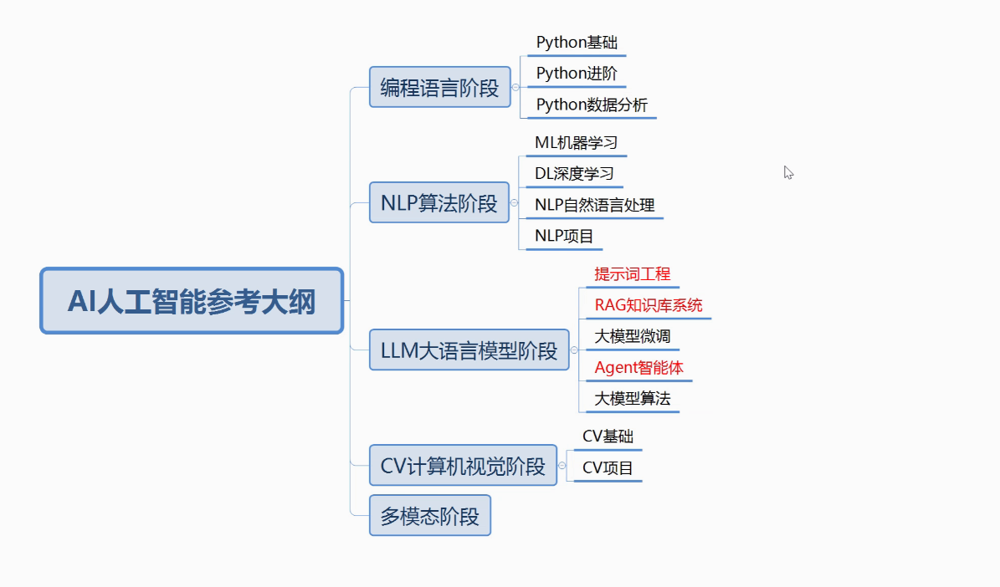
2. 机器学习
2.1 机器学习概述
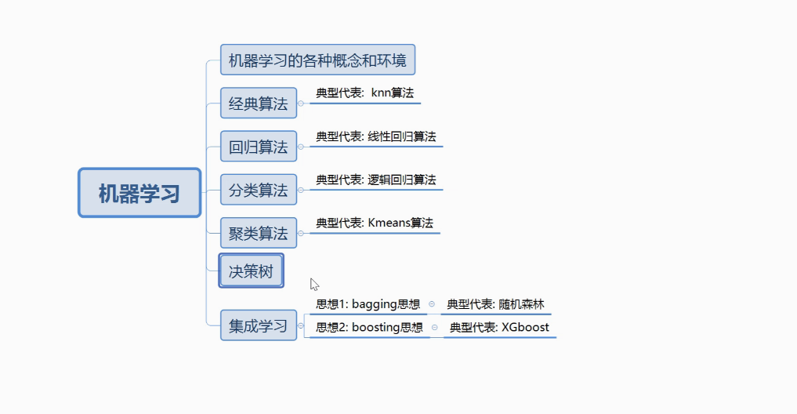
- 理解机器学习中的行和列
- ==行：样本==
- ==列：特征/标签==
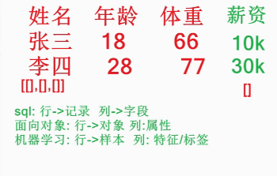
2.1.1 AI、ML、DL之间的关系
- 名词解析：
- ==AI：Artificial Intelligence 人工智能==
- ==ML：Machine Learning 机器学习==
- ==DL：Deep Learning 深度学习==
- AI、ML、DL关系
- ML机器学习是实现人工智能的一种方式/途径
- DL深度学习是机器学习下的一个分支/机器学习的子集
2.2.2 AI的发展
发展史：
==人工智能元年：1956年==（达特茅斯会议上首次提出”人工智能“概念）
==人工智能之父：约翰·麦卡锡==
神经网络、深度学习流派起
- 2012年 ：AlexNet深度学习的开山之作,计算机视觉深度神经网络方法研究兴
- 2015年：何凯明的残差网络,让深度神经网络达到前所未有的深度
- 2016年：GoogleAlphaGO战胜李世石(人工智能第三次浪潮)
大规模预训练模型
- 2017年：**《Attention Is All You Need》**论文发表
- 2017年：自然语言处理NLP的框架出现Transformer
- 2018年：Bert和CPT的出现，进入到大模型时期
- 2022年：chatGPTAIGC发展的阶段
- 2023年：大模型技术突破，引发全球热潮
- 2024年：AI应用大规模落地,硬件与场景深度融合
- 2025年：开启智能体时代,AI自主性提升
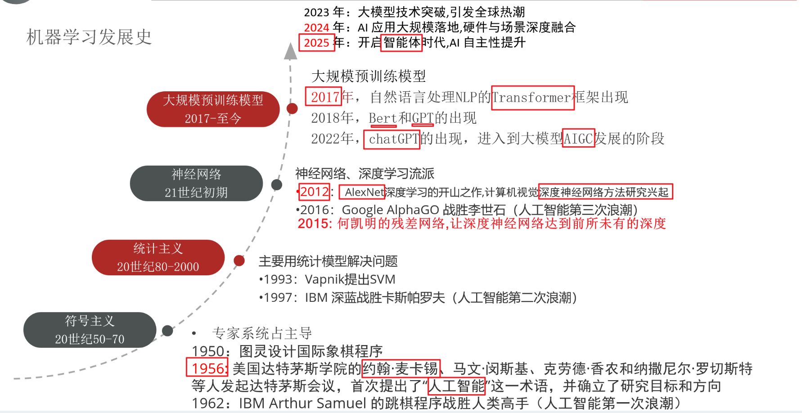
2.2.3 人工智能三要素
- 数据：==数据决定了训练效果的上限==
- 算法：为了逼近这个上限
- 算力：为了逼近这个上限
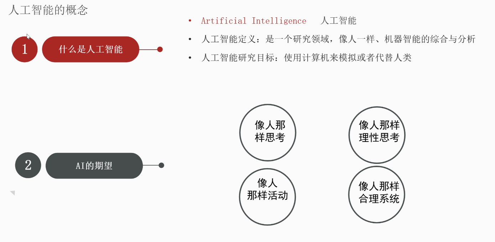
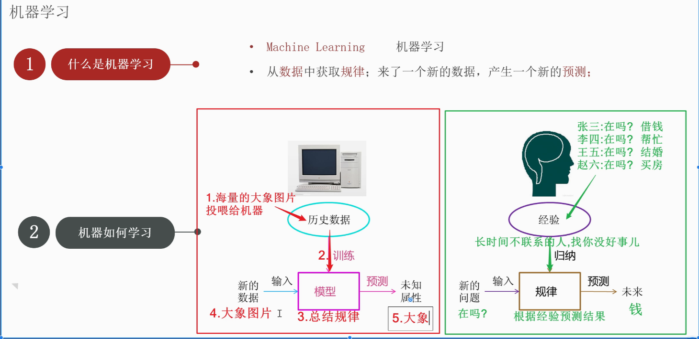
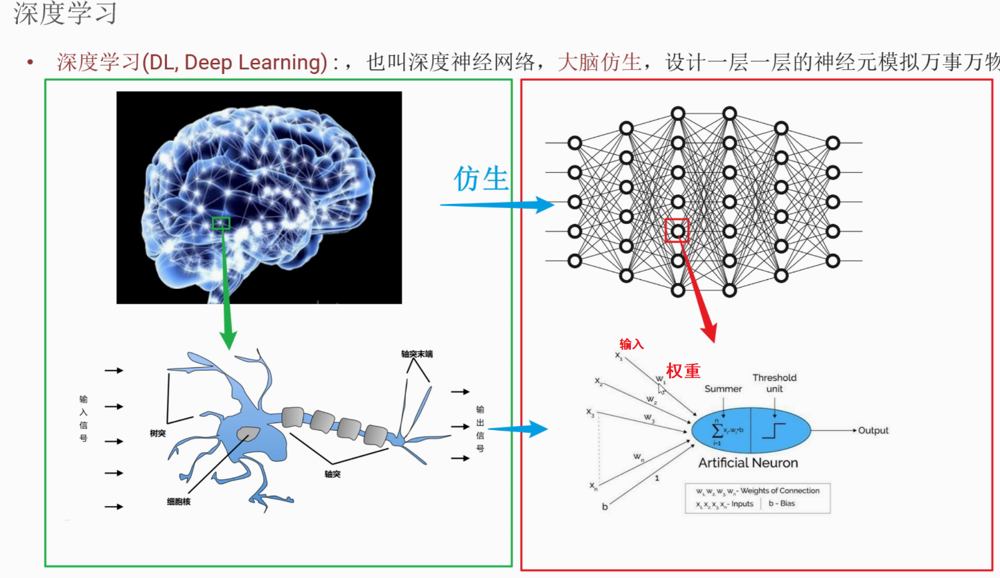
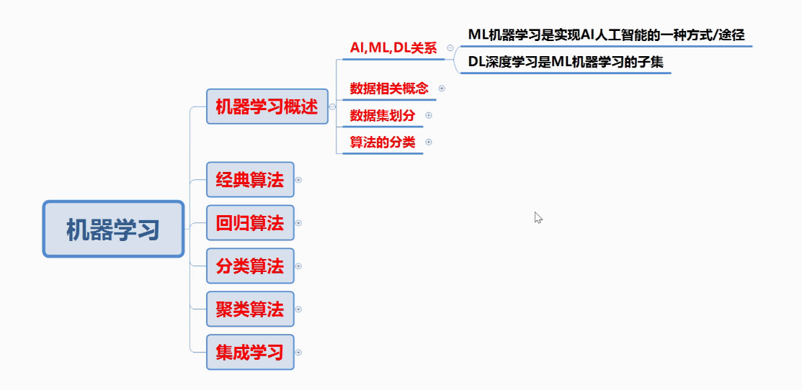
2.2.4 数据相关概念
- 样本（sample）：每行数据都是一个样本
- 特征（feature）：要参考的那些列 – [[特征]]
- 标签（label）：要预测的那一列 – [标签]
- 数据集：多个样本组成的数据
- 数据结构划分：
- 结构化数据：所有数据都能快速转换为二维表格形式的数据–**==excel表,sql表,csv==(**固定分隔符分隔的数据)–张三,18
- 非结构化数据 ：所有数据都不能转换为二维表格形式的数据–==图片,音频,视频==
- 半结构化数据：部分能转为二维表格数据,部分不能转换–==json,xml…==
- 数据结构划分：
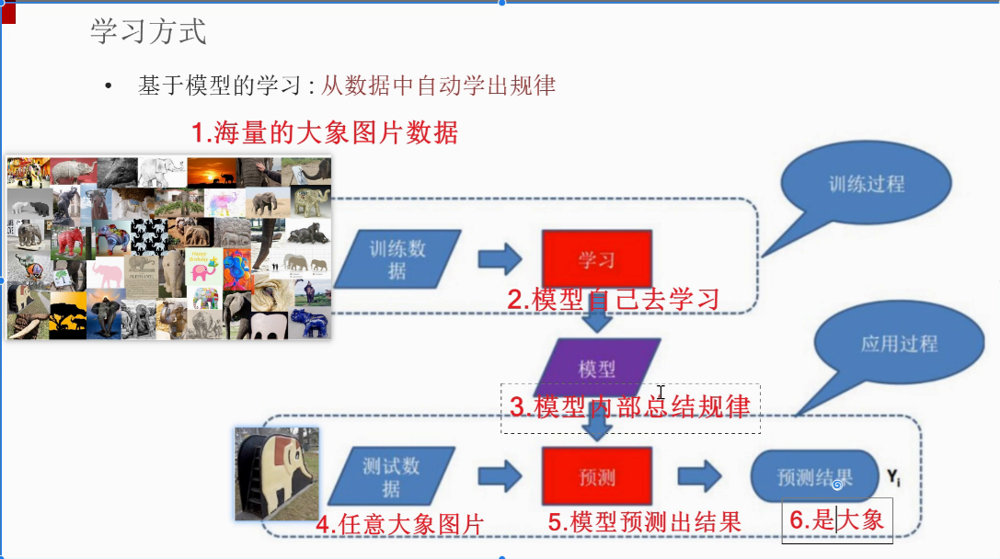
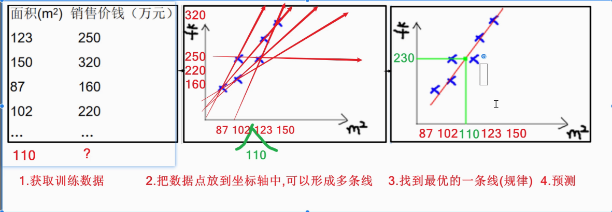

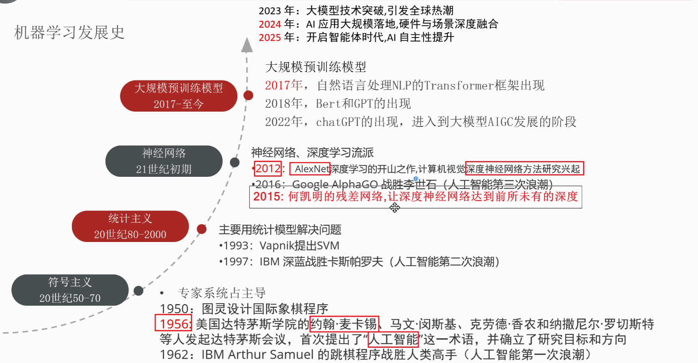
2.2.5 数据集划分
==数据集按照一定的比例（8：2/7：3）划分训练集==
训练集
- 训练模型需要的数据
- 预测结果标准命名规范：
- logits – 分数 – 举例：[猫的分数10,狗的分数40]
- probs – 概率 – 举例：[猫的概率0.2，狗的概率0.8]
- pred – 预测标签结果 – 最大概率就是预测结果：狗
测试集
- 测试模型需要的数据
==训练集：training set==
==测试集：testing set==
特征用x表示，标签用y表示
==x_train：训练集特征==
==y_train：训练集标签==
==x_test：测试集特征==
==y_test：测试集标签==
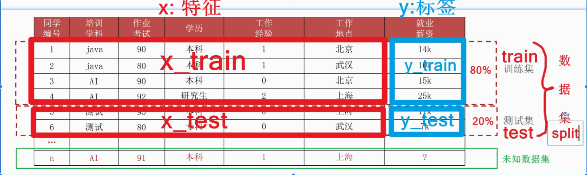
2.2.6 算法的分类
- 有监督学习：
- 所有样本都有标签
- 标签是连续的：回归任务 – 示例1：预测房价
- 标签是不连续/离散的：分类任务 – 示例1：预测电影类型；示例2：预测就业薪资等级
- ==分类任务的本质已经做过了回归任务==
- 所有样本都有标签
- 无监督学习：
- 所有样本都无标签：无标签典型的是聚类任务
- 半监督学习：
- 部分有标签，部分没有标签 – ==好处：提高了标记效率，降低了标记成本==
- 强化学习：
- ==智能体以获取更多的累计奖励为目的，重复学习，从而达到训练目标==
- ……
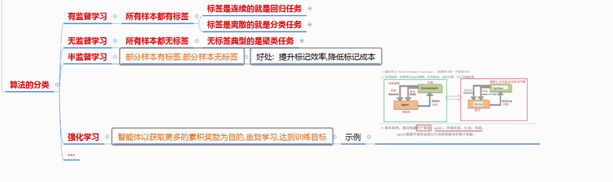
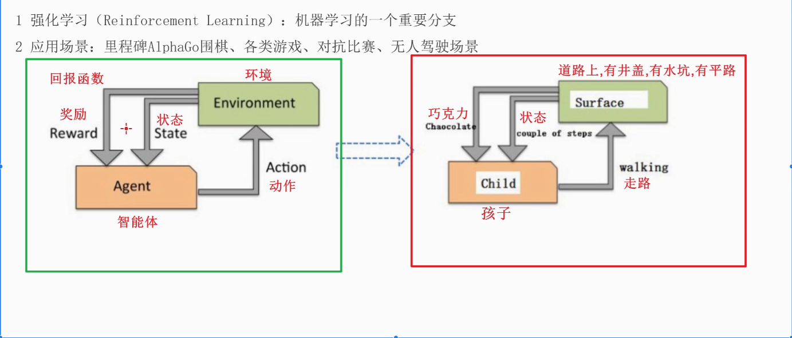
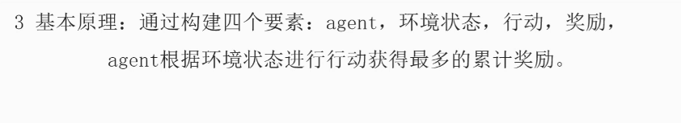
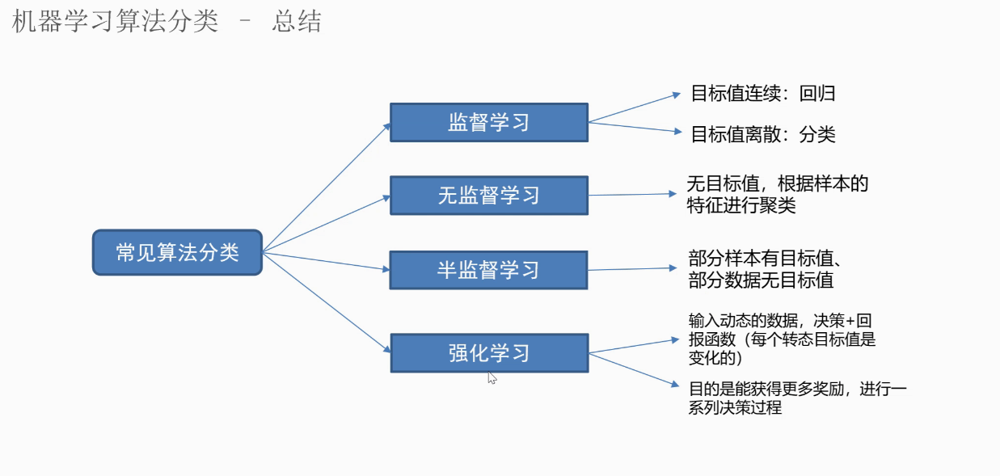
2.2.7 机器学习流程
- 准备数据
- 数据预处理
- 特征工程
- 机器学习（模型训练）
- 模型评估
- 模型预测
- 模型部署上线
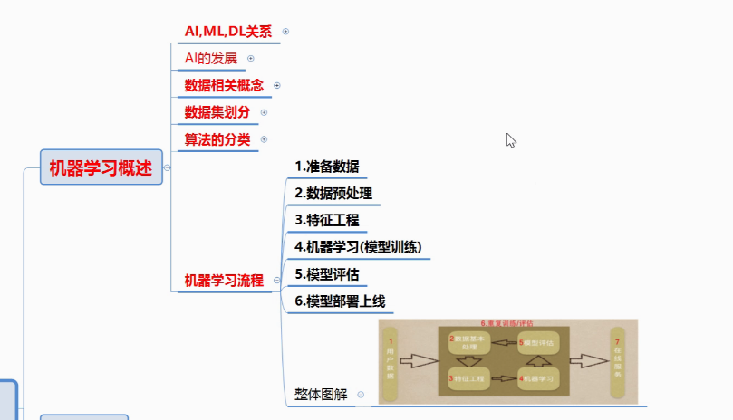
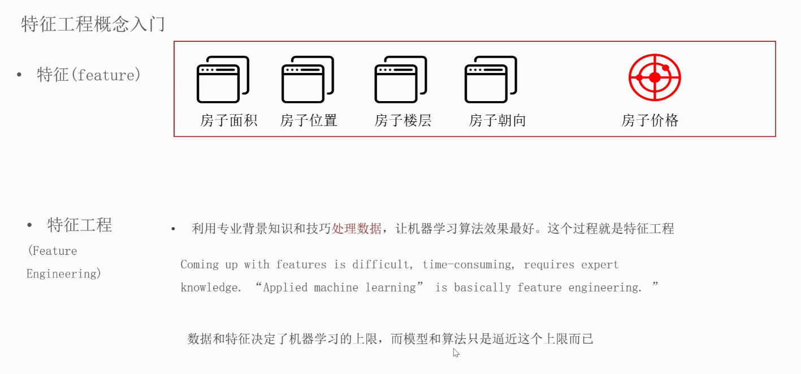
- 什么是特征工程：
- ==专家利用专业的背景知识和技巧处理数据，让机器学习算法效果最好，这个过程就叫特征工程==
- 特征工程步骤：
- 特征提取：从原始数据中提取出与任务相关的特征
- 特征预处理：特征对模型产生影响;因量纲问题，鲁棒性较差/有些特征对模型影响大、有些影响小
- ==量纲 = 单位==
- 归一化：
- （当前值-最小值）/（最大值-最小值）
- ==标准化（掌握）==
- 归一化：
- 特征降维：将原始数据的维度降低，叫做特征降维
- 特征选择：原始数据特征很多，但是对模型训练相关是其中一个特征集合子集
- 特征组合：把多个的特征合并成一个特征。一般利用乘法或加法来完成
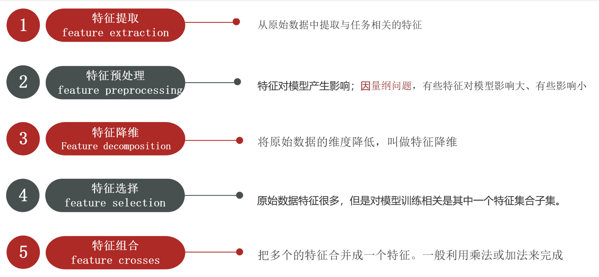
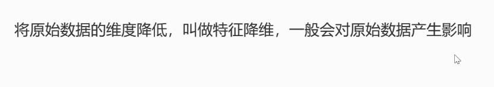
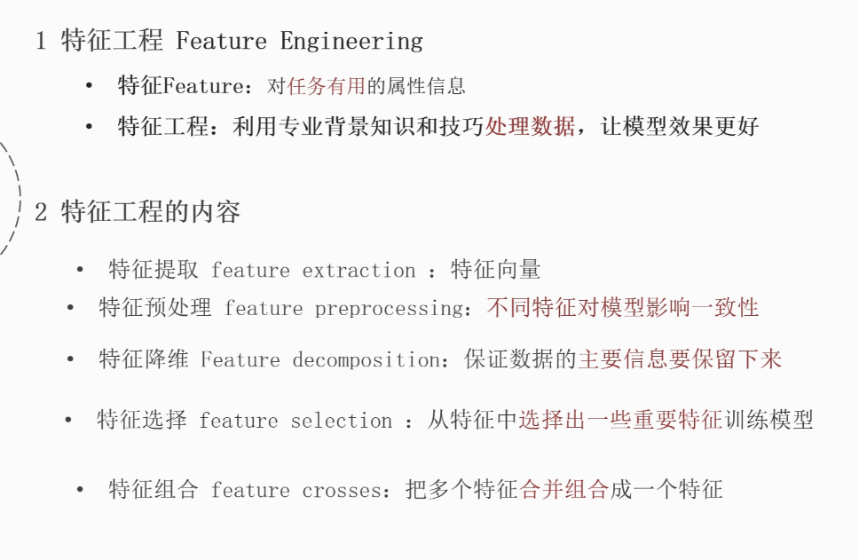
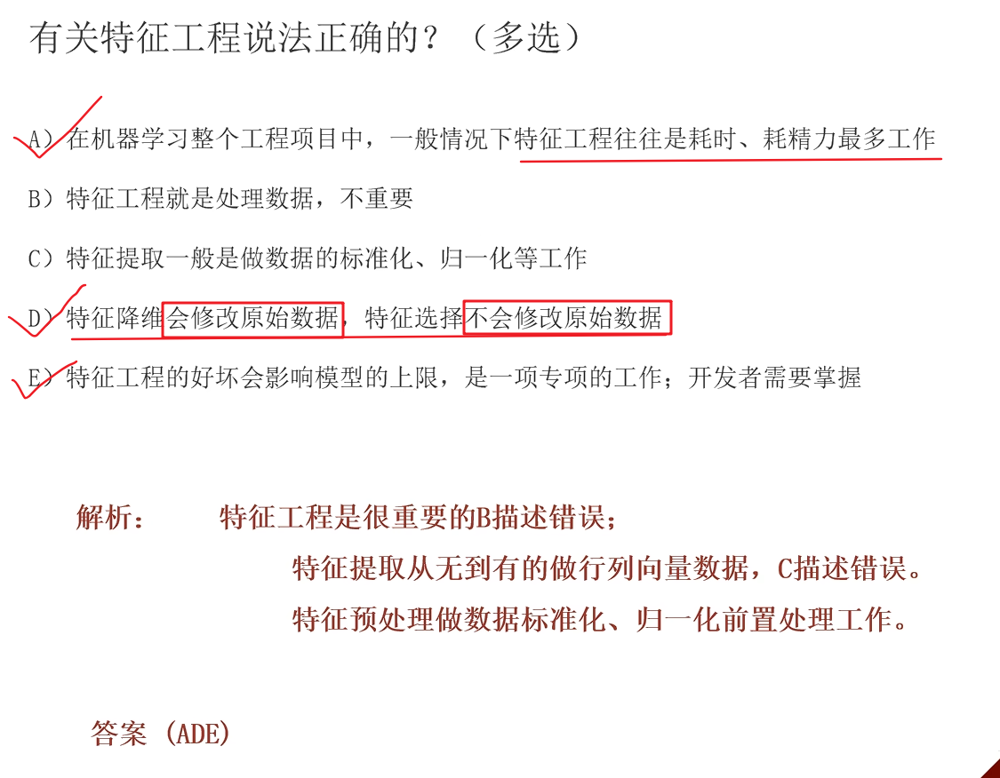
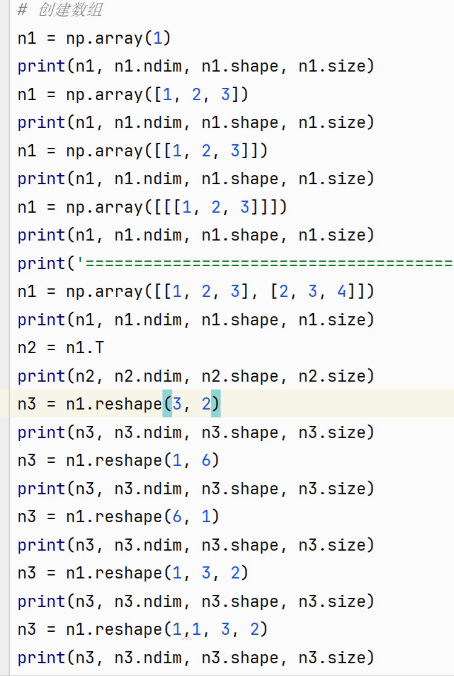
2.2.8 评估模型表现情况
- 拟合：（训练集和测试集）
- 欠拟合：训练集表现差，测试集表现也差
- 过拟合：训练集表现好，但测试集表现差
- 正好拟合：训练集和测试集表现都好
- 泛化：（未知数据集）
- 指在未知数据集上模型的拟合情况/表现好坏的情况
- 奥卡姆剃刀原则：
- ==当模型的泛化能力相当时，优先选择简单的模型==
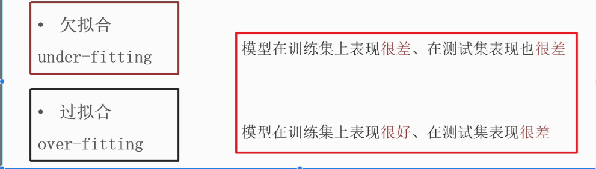
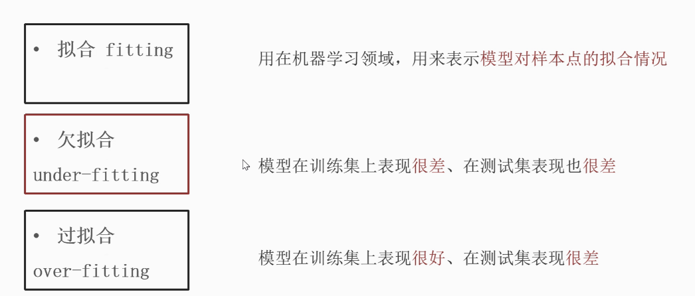
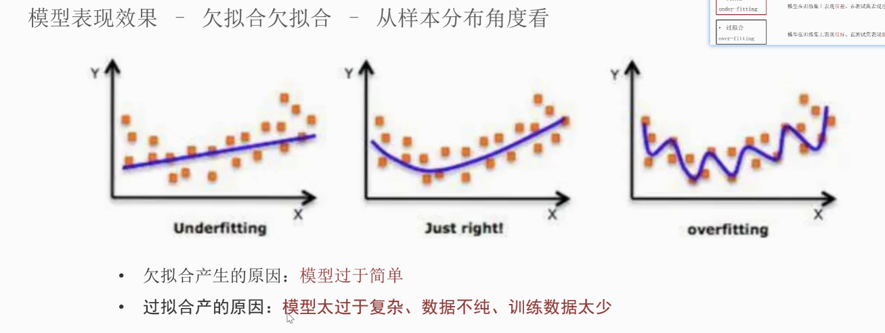
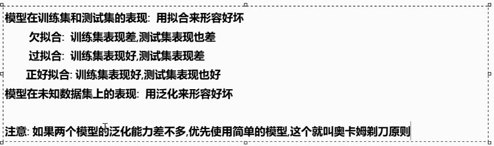
2.2.9 机器学习环境准备
- 使用Anacanda虚拟环境
- 创建虚拟环境：conda create –name 虚拟环境名称 python=版本号(一般使用3.9/10/11)
- 查看已有的虚拟环境：conda env list
- 切换虚拟环境：确保自己在系统环境下而不在任何其他环境下（包括base和其他虚拟环境）
- conda activate 虚拟环境名称
- 退出虚拟环境：conda deactivate
- ==安装机器学习库：pip install scikit-learn==
- pycharm关联虚拟环境：
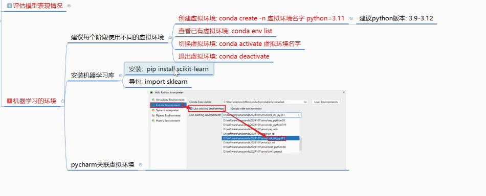